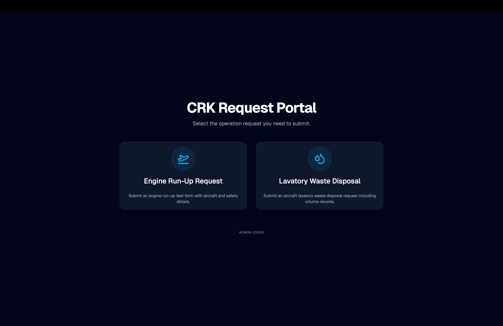
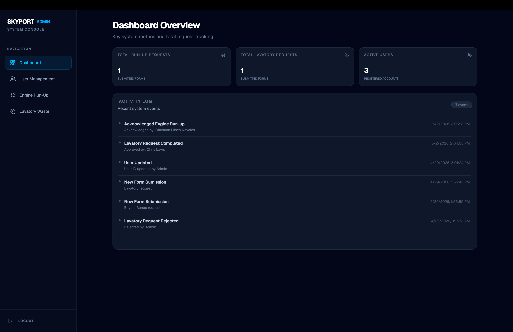
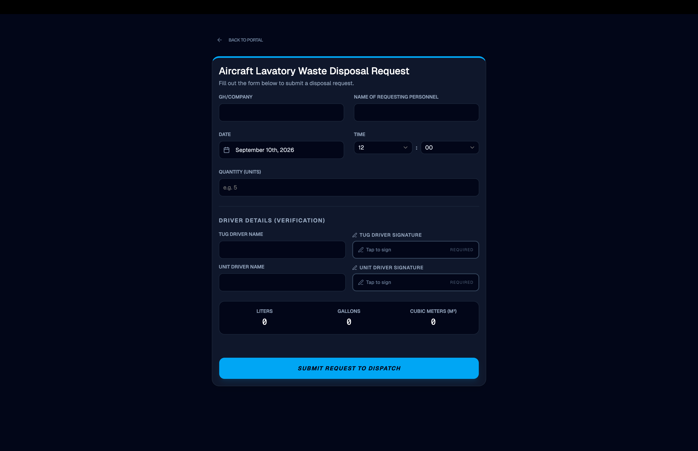
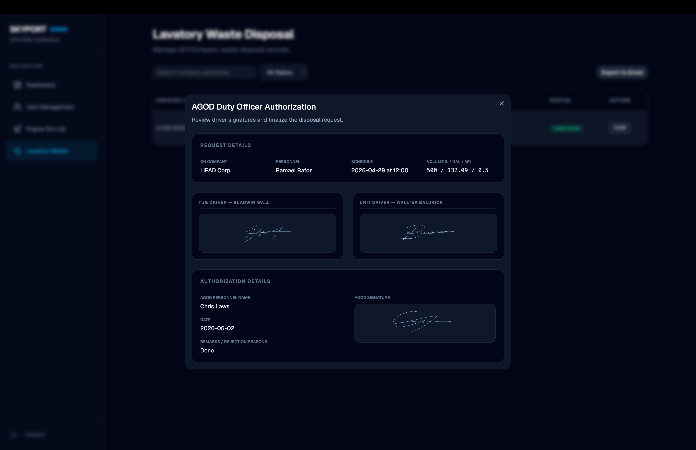
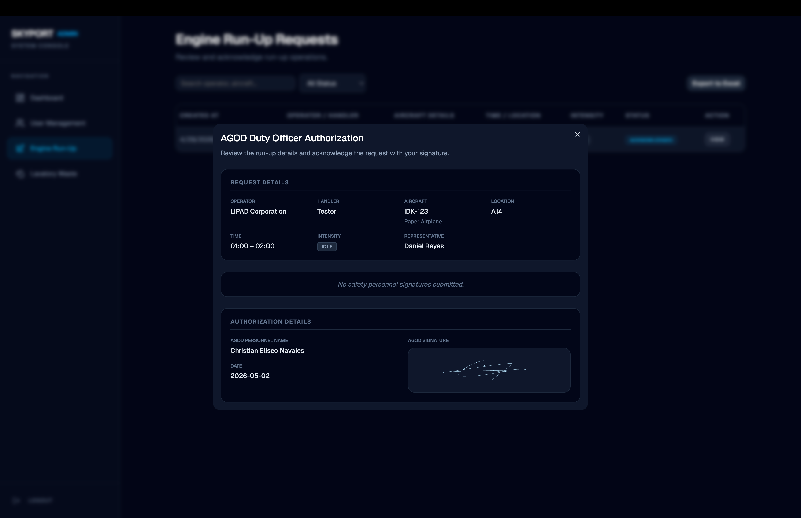

CRK Request Form System
A full-stack application built using the PERN stack during an OJT program to efficiently manage request forms with a robust client-server architecture.
Role
Full Stack Developer
Type
OJT Project / Prototype
Stack
PERN Stack
Status
Proof-of-Concept

Overview
The Challenge
During my On-The-Job Training (OJT), our small development team was tasked with building a digital solution for the airport, which heavily relied on processing paper-based request forms daily. This manual tracking method was not only inefficient but also cost the organization money every single day.
The goal was not to launch a production-ready application immediately, but to create a robust proof-of-concept that demonstrated a clear separation of concerns (client-server architecture) while reliably persisting request data locally to replace the paper forms.
Approach
The Solution
We developed the CRK Request Form System with a decoupled architecture. The frontend UI handled all user interactions, while a dedicated backend API managed the business logic and PostgreSQL (Supabase) database interactions.
Form Submission
Intuitive frontend interface allowing users to seamlessly fill out and submit various request forms with proper validation.
Data Management
Robust data storage using PostgreSQL via Supabase to ensure data integrity and scalable management during development and beyond.
Client-Server API
Demonstrated clear separation of concerns by building RESTful API endpoints for the frontend to consume.
Team Collaboration
Collaborated within a small team during the OJT program, focusing on modular code and foundational system design.
Technology
Tech Stack
Gallery
Preview




Results
The Outcome
The project served as an excellent proof-of-concept and a foundational learning experience for the team. By successfully splitting the system into frontend and backend components and storing data in PostgreSQL (Supabase), it proved the viability of the architecture for managing request forms effectively.
100%
Decoupled Architecture
2
System Components
POC
Successfully Delivered
Next project